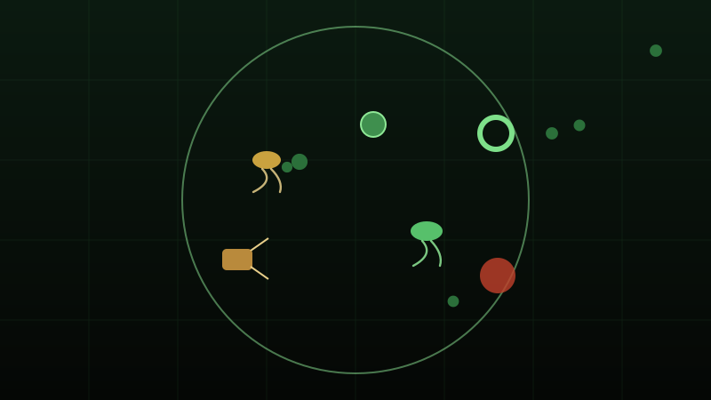
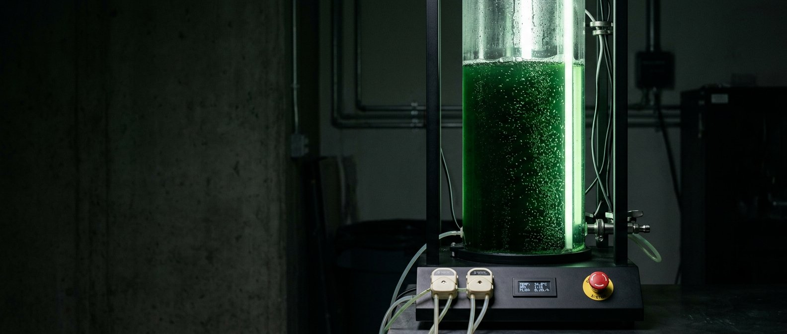
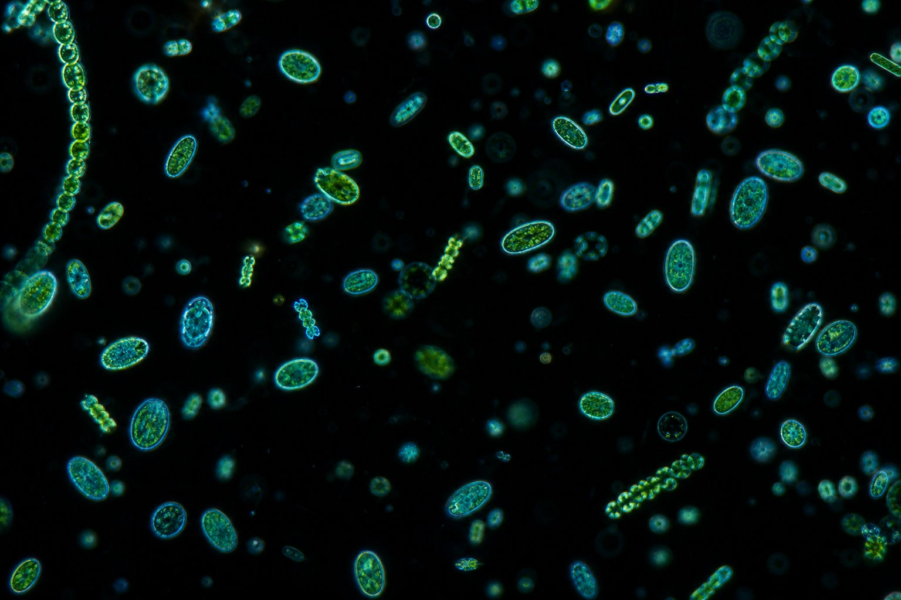
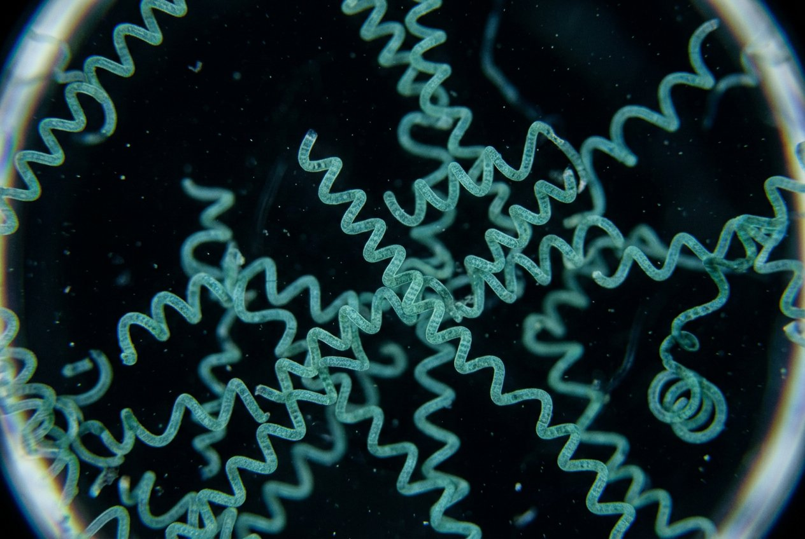
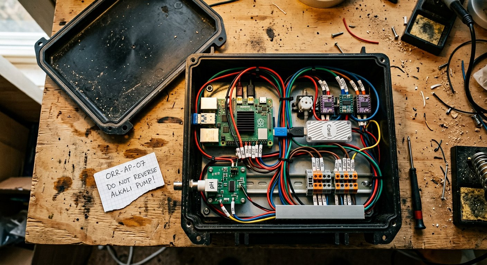
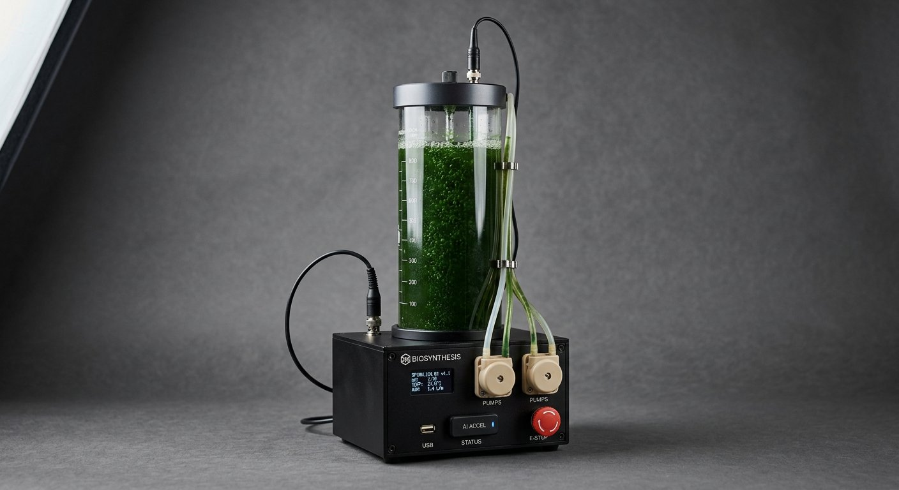
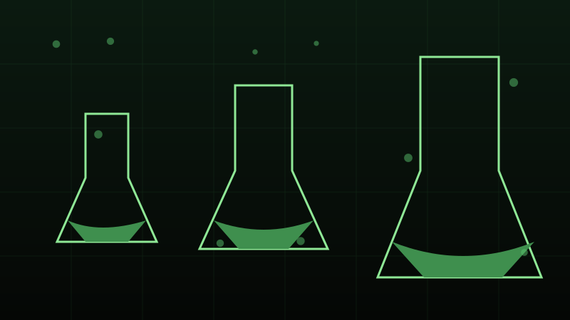
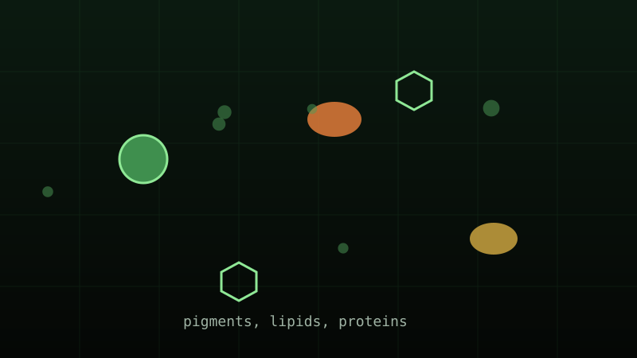

Spirulina Is a Cyanobacterium — What That Actually Means
Arthrospira platensis is a photosynthetic bacterium, not an alga in the plant sense. What cyanobacteria are, and why it matters for cultivation.
ALGAE BIOTECH · IN DEVELOPMENT
Algae biotech should be easier to get into.
We started Orr Biologicals because we were shocked by how hard it was to access algae biotechnology. An early interest in biology, followed by college coursework and microbiology, led us here. Now we are developing tools for cultivating algae and studying individual cells — and sharing the science while we work.
Explore algae cultivation and single-cell research methods: Algaephyte studies sensing, growth models and bounded photobioreactor control; Cyanoflow explores microfluidics, microscopy and phenotyping.

The cultivation system we are working toward.
Learn what algae biotechnology studies, connect cultivation conditions and measurements, or compare photobioreactor designs and transport limits. For individual-cell variation, start with microfluidic microalgae analysis. The species and applications hub connects the biology to useful contexts.
TWO RESEARCH PLATFORMS
Algaephyte explores cultivation.
Cyanoflow explores single cells.
PHOTOBIOREACTOR · IN DEVELOPMENT
Our cultivation concept combines six sensor channels, a camera and a growth model. The planned controller would check proposed doses against software limits, model predictions and independent hardware limits. These are design goals, not tested capabilities.
RESEARCH PLATFORM · IN DEVELOPMENT
Our single-cell research concept would separate cells into microfluidic compartments, image them over time and rank candidates for closer study. We want to examine differences that a whole-culture average cannot show. The workflow still needs experimental validation.

CYANOFLOW · IN DEVELOPMENTLiving simulation
Change the environment. The model recalculates growth, oxygen stress and useful output. Brightest is not best. More is not always more.

Simulated response from a growth model — illustrative, not measured laboratory data.
Proposed architecture
Six proposed layers, from the culture vessel to optional parameter sharing. This is an architecture to develop and test, not a report from deployed instruments.
Algaephyte · design notes
A column of spirulina, six sensor readings, a small model that forecasts growth, a camera that is not allowed to act, and an optional network that shares what vessels learn — never what they see.
The planned inputs are pH, temperature, wall irradiance, optical density at 750 nm, dissolved oxygen and conductivity. We want to use them to estimate biomass, internal nitrogen quota and dissolved inorganic carbon. Droop quota kinetics, Steele light response and Beer-Lambert attenuation are candidate model components; fitting them to real culture data is work still ahead.
The forecast target is seventy-two hours. A local rule-based planner would compare possible changes to carbon supply, nutrients, airflow and light. An optional assistant could explain proposals or accept operator requests, but would not have direct actuator authority. We need to test whether the model remains useful over that forecast horizon.
The proposed safety structure has three layers: fixed limits on mass, duty cycle, pH, temperature and dose frequency; a model check on the proposed action; and independent limits on the ESP32 actuator controller. A watchdog and physical emergency stop are also design requirements. We cannot call these protections reliable until fault testing demonstrates them.
Optical density measures light attenuation, not organism identity. A camera could provide a second evidence stream by looking for coils, fragments and unfamiliar shapes. We are considering a quantized vision model on a Coral accelerator, with training and compilation performed separately. A useful classifier needs labeled images and tests against bubbles, debris and organisms it has not seen before.
We have not established inference speed, power draw or contamination-detection accuracy for this proposed setup. Vision should be able to request caution, not authorize a pump. That separation is a design requirement, not an experimental result.
The proposed controller uses a Raspberry Pi 5 for telemetry, the growth model and local policy, with a Coral USB Accelerator for camera inference. A local Qwen assistant is an optional interface idea, not a dependency for control. Resource use, thermal behavior and safe fallback operation all need testing on the assembled hardware.
Algaephyte Mesh is a proposed way to share fitted model parameters rather than photos or raw traces. Candidate parameters include μ_max, I_opt, K_s, T_opt and Q_min. MQTT is the planned transport. Whether parameters transfer usefully between vessels and strains must be tested; we are not claiming that a network already exists or speeds up cultivation.

This educational calculator illustrates a mass deficit and an assumed staging rate of 0.5 g/L per hour. That rate is not a validated Algaephyte protocol or a recommendation for your culture. Verify your medium, measurements and procedure before any dosing.
Inputs are expressed as NaHCO₃ equivalents. Sodium carbonate and sodium bicarbonate are not interchangeable. A calculated deficit alone does not establish a safe dose.
The sensor stack
The proposed sensor suite measures water chemistry, light and optical density. No single reading can establish culture health, and the combined interpretation will need calibration and testing.
The digital twin
We plan to use nutrient-quota and light-response equations to evaluate proposed actions. Forecast accuracy, dosing limits and biological outcomes still need validation.
Droop's cell-quota kinetics decouple uptake from growth: cells store nitrogen, and division depends on that internal quota rather than the concentration in the medium. That single idea explains why a starved culture keeps dividing after you feed it, and why over-dosing nitrate buys you nothing but bacteria.
Steele's curve handles light — growth rises to an optimum irradiance and falls again under photoinhibition. Brightest is not best: past the optimum, the outer shell of the culture bleaches, oxygen supersaturates, and photosynthesis starts to poison itself. The twin treats irradiance as a control surface, not a schedule.
Beer-Lambert gives every radial shell of the vessel its own light climate, so the outer millimetre of a dense culture can be photoinhibited while the axis sits below compensation. A single wall sensor cannot see this. The twin can, because it integrates Steele's curve through the radial shells.
Most growers chase pH because pH is the number a ten-dollar probe will give you. In an alkaline Arthrospira medium the bicarbonate/carbonate pool is simultaneously the inorganic carbon supply, the overnight buffer, and the reason almost nothing else can live in the vessel. pH is what that pool looks like from the outside. The twin treats dissolved inorganic carbon as a state variable, not a setpoint.
As dissolved oxygen climbs through the afternoon, photosynthesis starts to supersaturate — the culture poisons itself. The first proposal is usually more air. The second is a modest dim. The third, if you have been stubborn about air, is a siesta. Oxygen stress is a state variable in the twin, not a footnote.
Autonomy with limits
An uncertain proposal should not move a pump. The design calls for three independent checks and a physical stop. Until tested, these are safety requirements, not guarantees.
A request such as "raise alkalinity to target" leaves out essential information: the mass, rate, current chemistry and equipment limits. Our design must reject incomplete requests rather than guess. We plan to test malformed proposals, stale sensor values, lost communications and stuck outputs before trusting automatic dosing.
Algaephyte Mesh
Our proposed mesh would share fitted growth-model parameters, not photos, raw sensor traces or locations. Participation would be optional. The privacy boundary and usefulness of shared parameters both need verification.
The transport design uses MQTT QoS 1, authenticated connections and TLS for remote traffic. Small payloads would suit limited connections. A last-will message can indicate a lost connection, but cannot establish whether a culture is healthy or a pump is working.
The proposed sharing concerns the growth model, not on-device camera training. We need to establish how to handle outliers, incompatible strains and malicious inputs. Local cultivation should not depend on the broker; disconnect tests will need to confirm that.

Local control by design
The proposed architecture separates the growth model, camera analysis and actuator controller. Our goal is local operation with independent hardware limits and a physical stop. Disconnect and fault testing must demonstrate that behavior before we claim it.
Inspect the hardware stackScale without fantasy
This number is arithmetic, not a result from our equipment: an assumed productivity of 0.13 g/L/day multiplied by a proposed 18 L volume gives 2.34 g/day. It does not demonstrate yield, food safety, carbon removal or scale-up performance. Those claims require measured runs, documented conditions and independent checks.
Development record
These are open design questions, not dated records of experiments we have completed.
When it goes wrong
Sensor drift, dry pumps, contamination and loss of power are risks the design needs to handle. These notes describe checks to investigate, not failures observed on deployed Algaephyte units.
Questions, answered plainly
Research questions · collaboration
Algaephyte and Cyanoflow are in development, not available for purchase or deployment. Tell us what you want to study, which access barriers you face or how you could help test the designs. This form opens your email client; nothing is sent until you send the message.
CULTIVATION GUIDES · DESIGN NOTES

Arthrospira platensis is a photosynthetic bacterium, not an alga in the plant sense. What cyanobacteria are, and why it matters for cultivation.

What a digital twin of a living culture actually is: state variables, counterfactuals, and why the twin never gets the final word.

When and how to harvest fresh Spirulina at home, simple screening and pressing methods, and what fresh actually tastes like.
The access gap is why we started.
Understanding the biology should not require owning a lab.